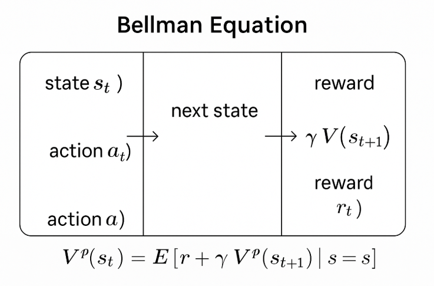

That means it's time to learn about reinforcement learning :) (RL).
Before I talk about RL, lets make the goal very clear. RL is all about policy (the goal). Policy is what action we would do given an observed state. Policy comes from rewards (think pavlov's dog). In robot learning, a policy might be reaching for a cup when presented. RL gives us a framework to train policies for robots and agents. This post will be about the math of RL.
We can simplify the world (environment) into a markov decision process (MDP). $$ MDP = \langle S, A, T, R, \gamma \rangle \\ $$ $$ \begin{align} S &= \text{current state} \\ A &= \text{possible actions} \\ T &= \text{transition function} \\ R &= \text{reward for being in state} \\ \gamma &= \text{discount factor} \\ \end{align} $$ That is all you need to know.
Ok, now that we have the environment, we need to understand what the value of being in it is. We can define $V^*(s)$ to be the best value of a particular state. Mathematically: $$ V^*(s) = \mathbb{E}_{s' \sim T(s,a^*,\cdot)} \left[ R(s,a^*,s') + \gamma V^*(s') \right] $$ This says: The best value of a given state is the expected value of the current reward (immediate) given the optimal action $a^*$ plus the discounted (matters less cuz of future) value of the future across all the states and their transition probabilities.
Now here is where you see a million forms of this equation.
Here, lets expand out the expectation: $$ V^*(s) = \sum_{s'} \Pr\left[S'=s' \mid S=s,\ A=a^*\right] \left[ R(s,a^*,s')+\gamma V^*(s') \right] $$
Notice, that the probability of being in the next state is just the transition function: $$ V^*(s) = \sum_{s'} T(s,a^*,s') \left[ R(s,a^*,s') + \gamma V^*(s') \right] $$
This can then be written as: $$V^*(s)=\max_a Q^*(s,a)$$
Where $$ Q^*(s, a) = \sum_{s'} T(s,a^*,s') \left[ R(s,a^*,s') + \gamma V^*(s') \right] $$
This can be rewritten in the same manner as $V(s)$.
Ok, hopefully that makes sense. Now, lets introduce another $V$. $V^\pi$ is the value of being in state s under a certain policy $pi$.
$V^\pi$ is NOT the same as $V^*$. $V^\pi$ represents the value under some policy. $V^*$ represents the BEST (GOAT) value.
Ok now that we know there is a difference between these two. Remember that $V^*$ is obtained from looping through all $Q(s,a)$ and taking the $\max$. $V^\pi$ is NOT max. Instead we want to sum (loop) across all actions and average them. $$ V^\pi(s)=\sum_a \pi(a\mid s)\,Q^\pi(s,a) $$
Lets write $Q^\pi$ similarly to $Q^*$ above. Remember that all the following equations ARE THE SAME: $$ Q^\pi(s,a) = \mathbb{E}_{s' \sim T(s,a,\cdot)} \left[ R(s,a,s')+\gamma V^\pi(s') \right] $$ $$ Q^\pi(s,a) = \sum_{s'} \Pr\left[S'=s' \mid S=s,\ A=a\right] \left[ R(s,a,s')+\gamma V^\pi(s') \right] $$ $$ Q^\pi(s,a) = \sum_{s'} T(s,a,s') \left[ R(s,a,s')+\gamma V^\pi(s') \right] \qquad (1) $$ Note that the final equation $(1)$ is the same form as $Q^*(s,a)$.
Above, we defined $a^*$. Remember that an action is a policy. So $a^* = \pi^*(s)$. $$ a^*=\pi^*(s) = \arg\max_a \mathbb{E}_{s' \sim T(s,a,\cdot)} \left[ R(s,a,s')+\gamma V^*(s') \right] $$ Note this is also written as: $$ a^*=\pi^*(s)=\arg\max_a Q^*(s,a) $$ Take a close look. The only difference is $\arg\max$ vs $\max$. What does it mean? $\max$ is the actual max value from $Q^*(s,a)$. $\arg\max$ is the action that gave us that max value which is what we want.
Here are actual frameworks to get the policy. Here are 2 common ones:
$$ \begin{aligned} \text{1.}\quad &V^i(s)=0 \quad \forall s\in S,\qquad \pi(s)\sim U(1,|A|),\qquad i=0 \\[6pt] \text{2.}\quad &V^{i+1}(s) = \sum_a \pi(a\mid s) \sum_{s'} \Pr\left[S'=s'\mid S=s,\ A=a\right] \left[ R(s,a,s')+\gamma V^i(s') \right] \\[6pt] \text{3.}\quad &\text{Find } a^*=\pi^*(s) \\[6pt] \text{4.}\quad &i\leftarrow i+1 \\[6pt] \text{5.}\quad &\text{Check } \left|V^{i+1}(s)-V^i(s)\right|<\epsilon \Rightarrow \text{ quit} \\[6pt] \text{6.}\quad &\text{Go to step 2} \end{aligned} $$
This says:
$$ \begin{aligned} \text{1.}\quad &V^i(s)=0 \qquad \forall s\in S,\qquad i=0 \\[6pt] \text{2.}\quad &V^{i+1}(s) = \max_a \sum_{s'} \Pr\left[S'=s' \mid S=s,\ A=a\right] \left[ R(s,a,s')+\gamma V^i(s') \right] \qquad \forall s \\[6pt] &\text{Alt:}\qquad Q^{i+1}(s,a) = \sum_{s'} \Pr\left[S'=s' \mid S=s,\ A=a\right] \left[ R(s,a,s')+\gamma \max_{a'}Q^i(s',a') \right] \\[6pt] \text{3.}\quad &i\leftarrow i+1 \\[6pt] \text{4.}\quad &\text{Check if } \left|V^{i+1}(s)-V^i(s)\right|<\epsilon \;\Rightarrow\; \text{quit} \\[6pt] \text{5.}\quad &\text{Go to step 2} \\[6pt] \text{6.}\quad &\text{Extract } a^*=\pi^*(s) \end{aligned} $$
This says:
The frameworks above will work if the state is small. Notice the recursive nature of the problem. To make the recursion cheaper, we use dynamic programming (DP) to cache previous states. However, it will still blow up if the state is very big, making it almost impossible to calculate $V(s)$.
We will train a predictor $\pi_\theta$ (read as policy $\pi$ under parameters $\theta$ where we train $\theta$ for our predictor): $$ s \xrightarrow{\text{feature map}} \phi(s) \xrightarrow{\pi_\theta} \Pr(A=a\mid S=s) $$ Now instead of a DP approach, our predictor will be trained to ouput the correct actions given a state. This reduces the memory and runtime of recursive approach.
Before we get started, understand that there are are 2 types of action spaces: continuous and discrete. In the continuous case: $$ \mu_a = w^\top \phi(s) $$ $$ a \sim \mathcal{N}\left(\mu_a,\sigma_a^2\right) $$ We transform the state $s$ into a feature map with $\phi(s)$. This is then multiplied by weights $w$ representing the center of the distribution or the model's preferred continuous action. In a continuous action space, there are $\mathbb{R}$ actions. We cannot assign a probability to all of them so we sample them from a guassian.
In the discrete case: $$ \pi_\theta(a\mid s) = \Pr(A=a\mid S=s) = \frac{ e^{\beta^\top \phi(s,a)} }{ \sum_{a'} e^{\beta^\top \phi(s,a')} } $$ Here, $\beta$ represents weights. In the discrete case, we are able to sum over all actions and taking the softmax of the logits converts them to probabilities.
We want: $\pi_\theta$. That means we need to train the $\theta$ values or parameters of our model and maximize some objective function (expected returns). $$ \pi_\theta(a\mid s) \quad\Longrightarrow\quad \text{learn } \theta \text{ to maximize expected return} $$ $$ \Delta \theta = \sum_{t=0}^{T} \sum_{t'=t}^{T} \left[ R(s_{t'},a_{t'},s'_{t'+1}) + \gamma V^\pi(s_{t'}) \right] \nabla_\theta \log \pi_\theta(s_t,a_t) $$ $$ \Delta \theta = \sum_{t=0}^{T} \sum_{t'=t}^{T} \left[ \gamma^{\,t'-t} R(s_{t'},a_{t'},s'_{t'+1}) \right] \nabla_\theta \log \pi_\theta(s_t,a_t) $$ $$ \theta \leftarrow \theta+\alpha\Delta\theta $$ Here, we compute the $\Delta \theta$ and run normal gradient ascent (because we want to maximize return). That the $\Delta \theta$ equation can be expressed in terms of $G$, the returns (how good was this state?): $$ \Delta\theta = \sum_{t=0}^{T} \underbrace{ \sum_{t'=t}^{T} \gamma^{\,t'-t} R(s_{t'},a_{t'},s_{t'+1}) }_{G_t} \nabla_\theta \log\pi_\theta(a_t\mid s_t) $$ $$ G_t = \sum_{t'=t}^{T} \gamma^{\,t'-t}R_{t'} $$ $$ G_t = R_t + \gamma R_{t+1} + \gamma^2 R_{t+2} +\cdots+ \gamma^{T-t}R_T $$ $$ \Delta\theta = \sum_{t=0}^{T} G_t \nabla_\theta \log \pi_\theta(a_t\mid s_t) $$ Now it is easier to see what this equation says: find the change in policy (gradient log $\pi$ term) and weight it by how good the return was.
The $G_t$ term is just notation for the following: "the immediate reward plus the discounted future reward for being in state $s$"
$$ Q^\pi(s_t,a_t) = \mathbb{E}\left[ G_t \mid s_t,a_t \right] $$ $$ Q^\pi(s_t,a_t) = \mathbb{E}\left[ \sum_{t'=t}^{T} \gamma^{\,t'-t}R_{t'} \;\middle|\; s_t,a_t \right] $$ $$ Q^\pi(s_t,a_t) = \mathbb{E} \left[ R(s_t,a_t,s_{t+1}) + \gamma V^\pi(s_{t+1}) \right] $$
One of the problems with using $G_t$ is that what if all the returns from the states are good? How can we differentiate them? To solve this we can use an advantage function $A_t = G_t - V^\pi(s_t)$ where $V^\pi(s_t)$ represents the baseline critic. Now $\Delta \theta$ becomes: $$ \Delta\theta = \sum_{t=0}^{T} A_t \nabla_\theta \log \pi_\theta(a_t\mid s_t) $$ $$ A_t = G_t - V^\pi(s_t) $$ $$ Q^\pi(s_t,a_t) = \mathbb{E}[G_t \mid s_t,a_t] $$ $$ G_t \text{ is one sampled return used to estimate } Q^\pi(s_t,a_t) $$ $$ G_t \approx Q^\pi(s_t,a_t) $$ $$ \therefore A_t \approx Q^\pi(s_t,a_t) - V^\pi(s_t) $$ $$ \Delta \theta = \sum_{t=0}^{T} \sum_{t'=t}^{T} \left[ Q^*(s_{t'},a_{t'}) - V^\pi(s_{t'}) \right] \nabla_\theta \log \pi_\theta(a_t\mid s_t) $$
The problem with the advantage function is the same with the DP approach. It relies on a $V^\pi(s_t)$ which is in nature recrusive. We need an estimate $V_\xi(s_t) \approx V^\pi(s_t)$ Now we have 2 parts that we need to train for.:
Let's revisit the prediction error using $V_\xi(s_t)$. Our advantage function is then: $$ A_t = G_t - V_\xi(s_t) $$ Let's use MSE as our loss function: $$ \mathcal{L}(\xi) = \frac{1}{2} \left( G_t - V_\xi(s_t) \right)^2 $$ $$ \nabla_\xi \mathcal{L}(\xi) = \nabla_\xi \left[ \frac{1}{2} \left( G_t - V_\xi(s_t) \right)^2 \right] $$ $$ \nabla_\xi \mathcal{L}(\xi) = - \left( G_t - V_\xi(s_t) \right) \nabla_\xi V_\xi(s_t) $$ $$ \Delta \xi = - \nabla_\xi \mathcal{L}(\xi) $$ $$ \therefore \Delta \xi = \left( G_t - V_\xi(s_t) \right) \nabla_\xi V_\xi(s_t) $$ This can come in another form: $$ G_t \approx \sum_{t=0}^{T} \gamma^t R(s_t,a_t,s'_{t+1}) + \gamma V_\xi(s') $$ $$ A_t = \left( \sum_{t=0}^{T} \gamma^t R(s_t,a_t,s'_{t+1}) + \gamma V_\xi(s') \right) - V_\xi(s) $$ $$ \mathcal{L}(\xi) = \left[ \left( \sum_{t=0}^{T} \gamma^t R(s_t,a_t,s'_{t+1}) + \gamma V_\xi(s') \right) - V_\xi(s) \right]^2 $$ Note the $\frac{1}{2}$ in the loss is optional (helps clean up the gradient). Now summing over all states, we get: $$ \mathcal{L}(\xi) = \sum_{\langle s,a,s' \rangle} \left[ \left( \sum_{t=0}^{T} \gamma^t R(s_t,a_t,s'_{t+1}) + \gamma V_\xi(s') \right) - V_\xi(s) \right]^2 $$ Then run normal GD: $$ \xi \leftarrow \xi - \alpha \nabla_\xi \mathcal{L}(\xi) $$
Wait... but isn't $G_t$ also recursive? Yes :(. Instead of waiting for the recursion, what can we do? Yes. That. Build a model ($Q_\phi$) The Bellman Residual helps us estimate difference between what the Bellman equation value should be and the value given by the critic. We can use this to get a good $G_t$ guesser by making the residual small. $$ \text{Bellman Residual} = \delta_t = R_t + \gamma \max_{a'} Q_\phi(s_{t+1},a') - Q_\phi(s_t,a_t) $$
The Bellman Residual Loss (our loss function): $$ \Delta \mathcal{L}(\phi) = \sum_{\langle s,a,\cdot\rangle} \left[ \sum_{t=0}^{T} \left( \gamma^t R(s_t,a_t,s'_{t+1}) + \gamma \max_{a'} Q_\phi^*(s_{t+1},a') \right) - Q_\phi^*(s_t,a_t) \right]^2 $$
Let's use this to train our $Q_\phi$ network. This is called Q-learning:
$$ \Delta \phi = - \sum_{t=0}^{T} \left[ R(s_t,a_t,s'_{t+1}) + \gamma \max_{a'} Q_\phi^*(s_{t+1},a') - Q_\phi^*(s_t,a_t) \right] \nabla_\phi Q_\phi^*(s_t,a_t) $$ $$ \Delta \phi = - \sum_{t=0}^{T} \underbrace{\delta_t}_{\text{Bellman Residual: constant w.r.t. }\phi} \; \nabla_\phi Q_\phi^*(s_t,a_t) $$ This says: sum the gradient updates to $Q$ weighted by the Bellman Residual over time. Of course run GD like alwayss: $$ \phi \leftarrow \phi - \alpha_Q \Delta\phi $$
TLDR; Deep RL solves a lot of the recursion problem by using NNs to estimate $V, Q, \pi$.
RL is hard.